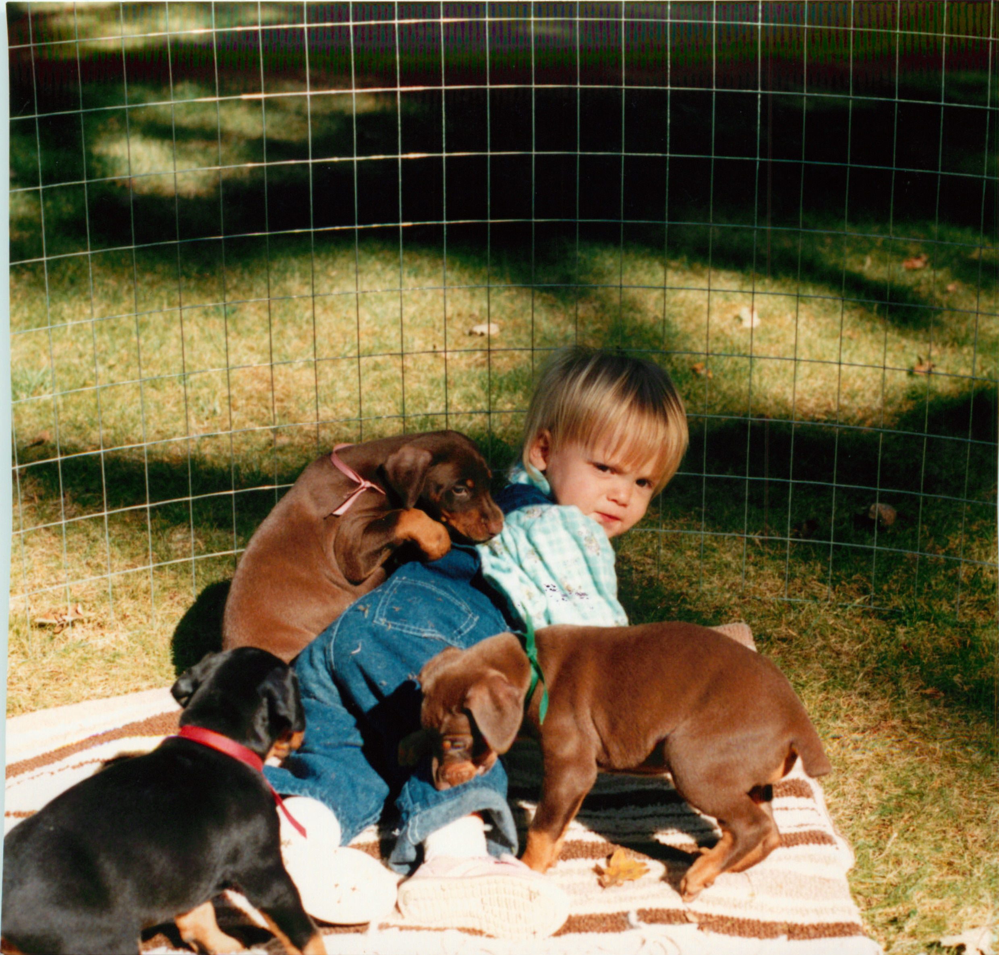

Home
Pre '90s
'90-'93
'93-'96
'96-'00
Post '90s
1988 - 1990

Puppies are the bomb.com!
I was almost 2 when the clock struck midnight on January 1st, 1990.
I was born in Corvallis, Oregon.
My parents raised me to believe I was a puppy until I was 12 years old.